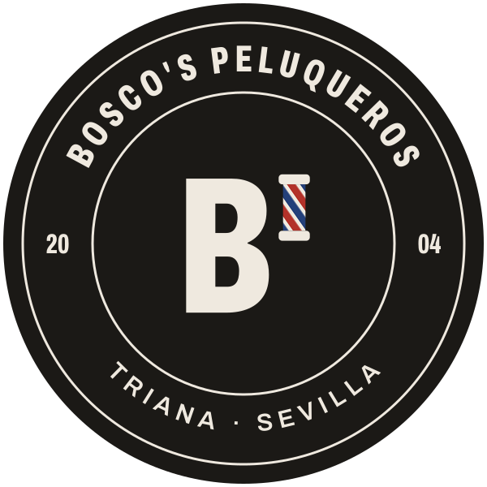

01Idea
Un rótulo de barbería de barrio, no un logo de franquicia. Letra alta y estrecha en negro, papel crudo de fondo y un único gesto de color: el apóstrofo de Bosco's es un poste de barbero. Ese poste es lo que hace reconocible la marca. Se usa solo y nunca se rodea de más adornos.
02Logos

Sello · stickers, tarjetas, puertaSVGPNG
03Colores
Tinta#1B1916
Papel#EFE9DF
Rojo poste#B3322A
Azul poste#24407A
El rojo y el azul solo aparecen en el poste y en detalles pequeños. Todo lo demás va en tinta y papel.
04Tipografías
Archivo Extra Condensed 800Corte y barba
Newsreader Italicsin prisas y como lo pides
Archivo 400–600Textos, precios y horarios. Calle Alfarería 113, Triana.
Las dos son gratuitas en Google Fonts y sirven igual para Canva, carteles o la web.
05Reglas
- No estirar, girar ni poner sombras al logo.
- Sobre fotos, usar el logotipo en negativo o el sello, nunca el de tinta sobre fondo oscuro.
- Dejar alrededor del logo un margen de al menos la altura del poste.
- En Instagram, el icono va de foto de perfil y el sello sirve de marca de agua en las fotos.